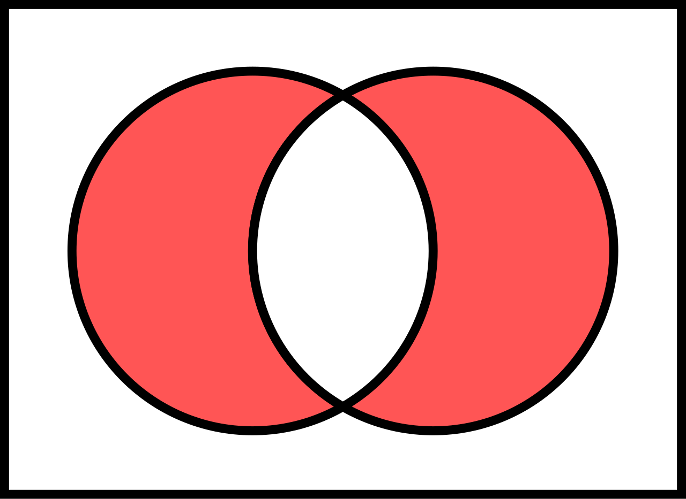
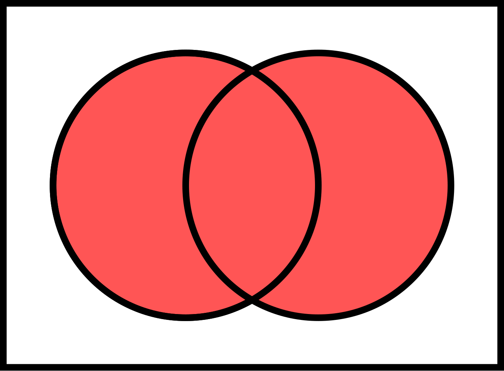

Differenza tra “O” Italiano e OR Logico (∨)
Idea Principale
Nel linguaggio italiano quotidiano, la parola “o” viene spesso interpretata come:
“uno oppure l’altro, ma non entrambi”
In logica matematica invece, l’operatore OR ( ∨ ) è inclusivo.
P ∨ Q
L'OR logico è vero anche quando
entrambe le proposizioni sono vere.
↓
Confronto
“O” Italiano
- Interpreta “o” in modo esclusivo
- Uno dei due eventi deve essere vero
- Entrambi veri → falso
OR Logico ( ∨ )
- Interpretazione inclusiva
- Basta che almeno uno sia vero
- Entrambi veri → vero
Si può vedere nello specifico la differenza insiemistica nei seguenti due diagrammi che mostrano rispettivamente la "o" della lingua italiana (XOR) e l'OR della logica matematica.


↓
Tabella di Verità
| P | Q | P ∨ Q | “O” Italiano |
|---|---|---|---|
| F | F | F | F |
| T | F | T | T |
| F | T | T | T |
| T | T | T | F |
↓
Esempio
Lingua italiana
“Puoi scegliere tè o caffè”
Di solito si intende soltanto uno.
Logica matematica
P = “prendo il tè”
Q = “prendo il caffè”
P ∨ Q
La frase è vera anche se prendo entrambi.
OR Esclusivo (XOR)
In logica esiste anche un operatore che rappresenta l’“o” esclusivo italiano.
P ⊕ Q
XOR è vero soltanto quando
esattamente una delle due
proposizioni è vera.